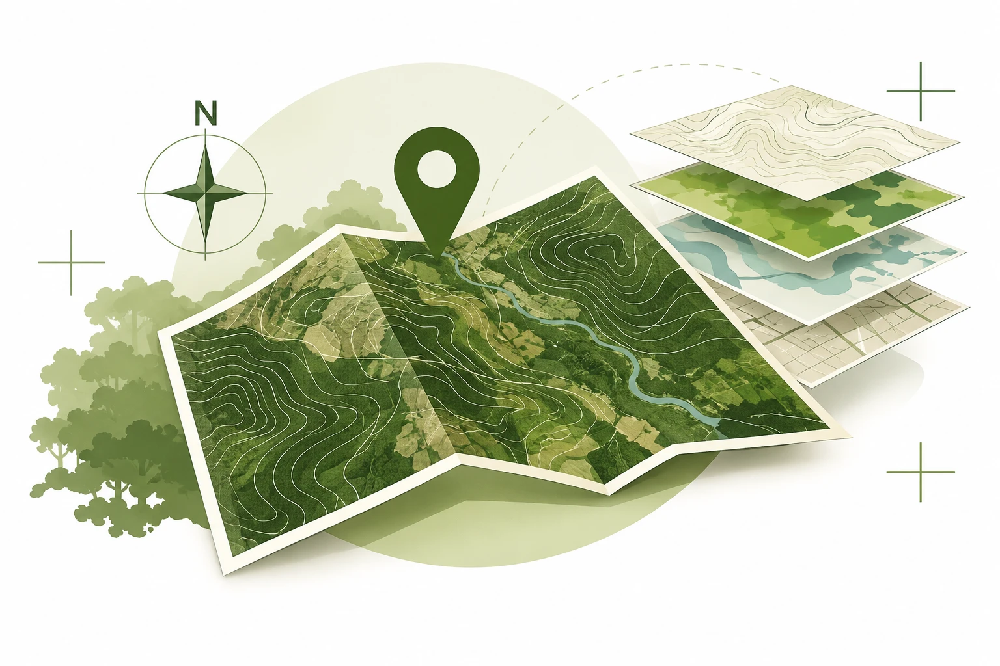

Engenheira florestal
Vanessa Silva
Trabalho com geoprocessamento e licenciamento florestal no Paraná, com foco na análise de inventários florestais.
Sobre
Sou engenheira florestal, com pós-graduação em Engenharia e Gestão Ambiental e em Georreferenciamento de Imóveis Rurais. Cresci em uma chácara em Agudos do Sul, na região metropolitana de Curitiba, e foi esse convívio com a natureza que me levou à engenharia florestal.
Trabalho com análise de dados de inventário florestal e acredito que uma boa análise começa por uma base sólida em estatística e análise espacial. É isso que procuro trazer para cada projeto.
Desenvolvi o GeoDS (Geospatial Data Science), um projeto de análise de dados espaciais organizado em módulos, com análises que terminam em mapas. Os resultados são publicados com as minhas anotações sobre métodos e escolhas.
Projetos
-

Projeto · Geospatial Data Science
GeoDS
Projeto que organizei em módulos, com análises que terminam em mapas. Cada análise tem uma publicação com os resultados e as minhas anotações.
-

Processamento de dados · Conservação
Espécies ameaçadas
Análise da conservação da biodiversidade pelo manejo de espécies ameaçadas de extinção.
-

Arborização urbana · Áreas verdes
Arborização de Mandirituba
Planejamento da arborização de ruas e áreas verdes de Mandirituba.
Experiência
-
Junho de 2024 – atual
Enecon Engenharia
Engenheira florestal
Apoio técnico à Assessoria de Engenharia Ambiental do DER-PR, em contrato de abrangência estadual, com 12.205,79 km de malha rodoviária.
- Análise crítica de inventários florestais em processos de licenciamento florestal de obras rodoviárias, avaliando a metodologia de amostragem, a consistência dos dados e a caracterização fitossociológica.
- Instrução e acompanhamento de processos de licenciamento florestal no SINAFLOR, incluindo autorização de supressão de vegetação, DOF e reposição florestal obrigatória.
- Análise espacial e cartografia em QGIS: sobreposição do traçado rodoviário com APP, reserva legal e CAR, cálculo de áreas de supressão e produção de mapas técnicos que instruem pareceres.
- Avaliação técnica de projetos de compensação ambiental vinculados a obras rodoviárias.
-
Junho de 2022 – maio de 2024
Instituto Água e Terra
Residente técnica
- Análise técnica de projetos de compensação ambiental e de restauração de áreas degradadas.
- Avaliação de inventários de vegetação nativa em processos de licenciamento florestal.
- Análise multitemporal de supressão de vegetação em imóveis com autos de infração, alertas do MapBiomas ou processos de licenciamento, utilizando ArcGIS Pro para verificação de intervenções posteriores ao marco legal aplicável.
-
Nov. de 2021 – maio de 2022
BRF S.A.
Estagiária
Suporte a produtos de Business Intelligence e Analytics: dashboards e relatórios para as áreas de RH, manutenção das ferramentas e das bases de dados.
-
Maio de 2021 – abril de 2022
Flora Pantanal
Engenheira florestal
Responsável técnica pela produção de mudas no Horto Municipal Barreirinha, em Curitiba (PR).
-
Dez. de 2020 e mar. de 2021
Index Florestal
Consultora técnica
Processamento e análise de dados fitossociológicos e propostas técnicas para projetos de restauração (Resolução INEA 143/2017).
-
Fevereiro de 2021
Trabalho autônomo
Consultora
Elaboração e execução de inventário florestal em plantio de Corymbia citriodora e Eucalyptus urophylla.
-
Ago. – dez. de 2019
Secretaria de Agricultura e Meio Ambiente de Mandirituba
Estagiária
Avaliação da arborização das principais ruas do município e do Parque Municipal Angelo Zeglin Palu, como base para o Plano de Arborização Urbana.
-
Ago. – dez. de 2019
Universidade Federal do Paraná
Monitora
Planejamento e elaboração de conteúdo da disciplina e apoio aos alunos no uso de softwares.
-
Mar. – set. de 2018
Empresa Júnior de Consultoria e Planejamento Florestal
Consultora
Planejamento e execução de inventários florestais.
Formação
-
2025
Georreferenciamento de Imóveis Rurais · habilitação registrada no CREA
Pós-graduação · Pontifícia Universidade Católica do Paraná
-
2022 – 2024
Engenharia e Gestão Ambiental
Pós-graduação · Universidade Estadual de Ponta Grossa
-
2022
Gestão, Licenciamento e Auditoria Ambiental
Pós-graduação · Universidade Tuiuti do Paraná
-
2014 – 2019
Engenharia Florestal
Bacharelado · Universidade Federal do Paraná
Cursos
- 2021
-
2021
Microsoft Power BI para Data Science 2.0
Data Science Academy
Ferramentas
Análise de dados
- SQL
- Excel
- Power BI
Geoprocessamento
- QGIS
- ArcGIS Pro
Idiomas
- Português (nativo)
- Inglês (básico)
- Espanhol (básico)
Contato
- vanesilva.cs@gmail.com
- GitHub
- Curitiba, PR